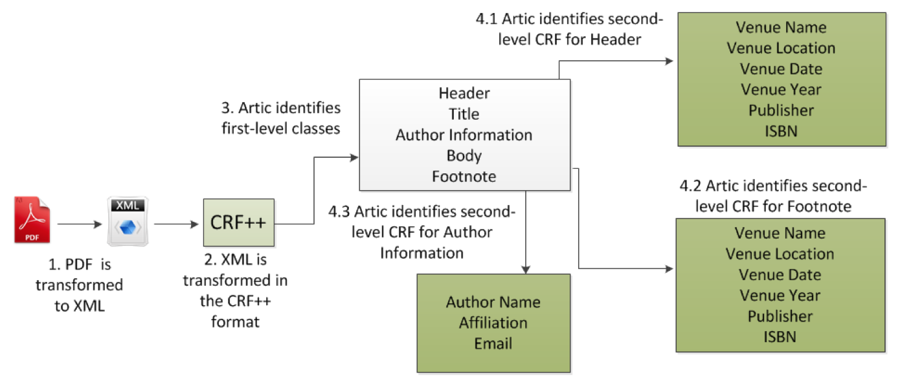
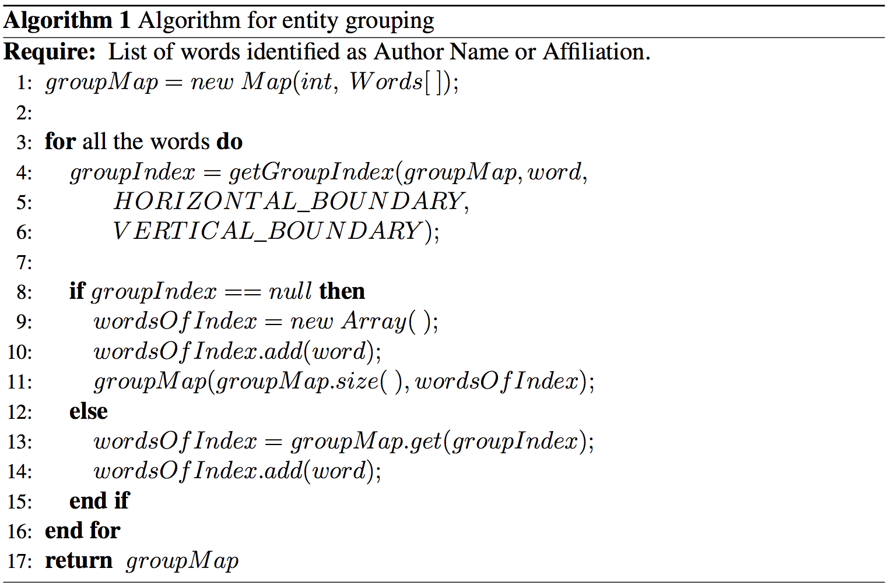
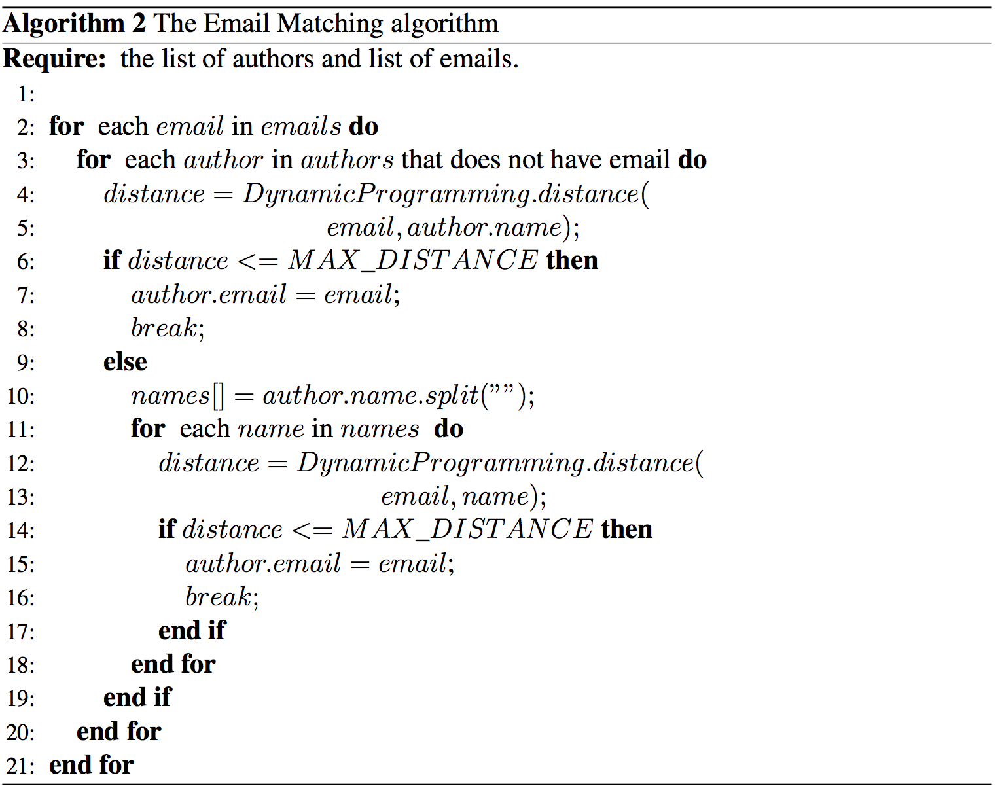
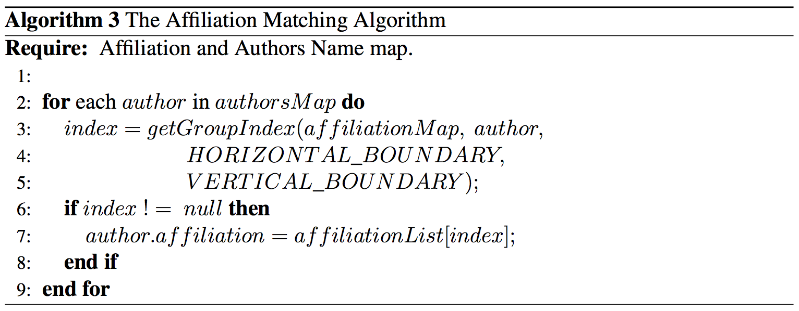
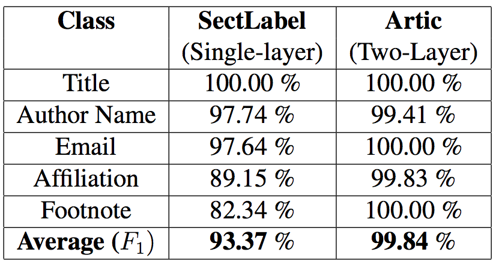
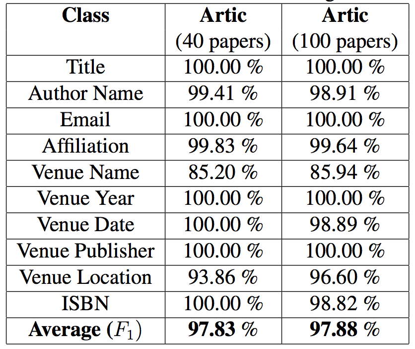
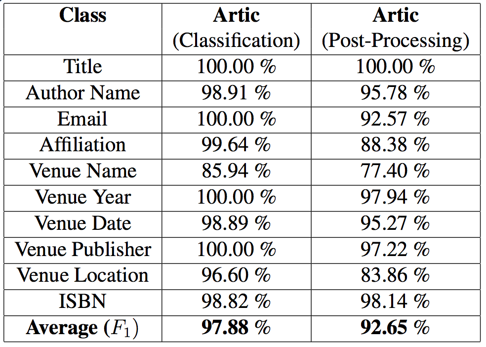

Universidade Federal do Rio Grande do Sul
Instituto de Informática
Programa de Pós-Graduação em Computação
ARTIC: Metadata extraction from Scientific Documents in PDF
Roadmap
- Introduction
- Related Work
- ARTIC
- Experiments
- Conclusions
Introduction
- Metadata to describe the document
- Metadata is important for Information Retrieval Systems
- PDF allows the definition of metadata
- Major problem: lack of metadata definition by the writers
Solution??

Introduction
- Solution: identify metadata information automatically
- Existing Research divided into:
Template matching
Web-base lookup
Machine Learning
Related Work: Template Matching
- Build an apriori structure (template) for each metadata
- Post-process to get the matching elements
- Example:
- Huang et al. (2006), Flynn et al. (2007)
Title template would be the biggest font with bold style on the first page
Post-process to load the lines in the first page of the article with biggest font size and bold style
Related Work – Web-base lookup
- Identify the smallest unit of information from the document
- Retrieve the complete information from a universal database (Google Scholar, IEEE, ACM)
- Aumüller (2009)
Related Work – HMM
- Machine Learning technique used to solve sequence labeling problems
- Metadata extraction as an instance of the sequence labeling problem
- HMM: Label each word and/or line with a class, such as: title, author
- Build the model using a training set
- Test the model using a test set
- Seymore et al. (1999), Yin et al. (2004)
Related Work – CRF
- HMM requires the enumeration of all possible observations
- HMM assumes that the observations are independent
- CRF overcomes HMM limitations for sequence labeling problems
CRF – Luong et al. (2010)
- Single-layer CRF to identify metadata
- Build the features to allow the CRF to identify the classes (metadata)
- Used OmniPage OCR tool to extract the PDF features
CRF – Luong et al. (2010)
- Some features:
Location: position of the text line within the page
Format: font information such as font size, bold and italic
Paragraph: to detect blocks of text lines belonging to the same paragraph
CRF – Luong et al. (2010)
- Used CRF++ package for training and testing
- Input in the form:
“feature_1 feature_2 … class”
“center bold fontSize_big … TITLE”
br.ufrgs
var artic = new ProposedSolution();
ARTIC: Contributions
- Two-layer CRF model: line-level (first layer), word-level (second layer)
- Relationship between authors, emails, and affiliations (post-processing)
- Output in a well-defined format (JSON)
ARTIC: Overview
- Identifies larger components: Header, Title, Author Information, Body, and Footnote
- Second-layer for Header, Author Information, and Footnote
ARTIC: Overview
- Definition of the features for the layers
- Used CRF++ as a framework: feature as columns
- Last column is the CLASS
ARTIC: Overview
ARTIC: First-level
- Header: information about the conference
- Title: title of the paper =D
- Author Information: author name, emails, and affiliations
- Body: non-relevant data for metadata extraction
- Footnote: non-relevant data for metadata extraction
- Some Features:
Alignment, Bold, Underline, Italic, and Font Size
ARTIC: Second-level
Header CRF: explores the words of the lines with Header class (first-level).
- Conference Name: conference/journal name that the paper has been published
- Conference Year: year when the conference happened
- Conference Date: date when the conference happened
- Conference Location: location where the paper has been published
- Publisher: ACM, IEEE, Springer, Elsevier
- Other: non-relevant information for metadata extraction
- Some Features: Word Content, Character Length, Month, Year, and Country
ARTIC: Second-level
Author Information CRF: explores the words of the lines with Author Information class (first-level).
- Author Name: author name (words without relationship)
- Affiliation: author's affiliation (words without relationship)
- Email: author's email (words without relationship)
- Other: non-relevant information for metadata extraction
- Some Features: Word Content, Possible Affiliation, and Possible Email
ARTIC: Second-level
Footnote CRF: explores the words of the lines with Footnote class (first-level).
- Conference Name, Conference Year, Conference Data, Conference Location, Publisher, Email, Other
- ISBN: ISBN number (e.g.: 978-1-60558-01/08/04)
- Some features: Word Content, Possible Email, and ISBN
ARTIC: Post-processing
- Apply algorithms to identify the relationship between authors, emails, and affiliations.
- Provide the metadata output in a well-defined data structure
ARTIC: Entity Grouping Algorithm
ARTIC: Email Matching Algorithm
ARTIC: Affiliation Matching Algorithm
Experiments
Experiments
- Can the two-layer CRF model improve the classification results compared to using a single-layer?
- Can the results hold for a larger dataset?
- Can the post-processing algorithms properly identify the relationship between authors, emails, and affiliations?
Experiments: Setup
- SectLabel (Luong et al.) as the baseline
- Dataset: 100 papers from IEEE, ACM, Elsevier, Springer
- 100 papers to include 40 papers from SectLabel
- Remaining 60 selected by postgraduate students from our institution
- Students also provided JSON annotation (gold-standard)
- OmniPage Version 18 used to extract rich text information
- 10-fold cross validation in all scenarios
Experiments: Experiment 1
Can the two-layer CRF model improve the classification results compared to using a single-layer?
Experiments: Experiment 2
Can the results hold for a larger dataset?
Experiments: Experiment 3
Can the post-processing algorithms properly identify the relationship between authors, emails, and affiliations?
Experiments: Affiliation Issue
Affiliations too close
Conclusions
Conclusion
- OCR as the most effective way to extract rich text information
- OmniPage runs only on Windows :/
- If we use OCR, we support what they support, not only PDF =D
- 100 papers still small compared to the size of papers available online
- Possible Future Work: evaluate tools to minimize manual annotation
Conclusion
- No machine learning in the Post-Processing algorithms
- DO et al. (2013) presents a method to match authors and affiliations using Support Vector Machine (SVM)
- Possible Future Work: evaluate the use of ML techniques also at the post-processing level
Conclusion
- Artic presented a relative gain of 6.92% compared to SectLabel.
- The post-processing algorithms represented a relative loss of 5.34% compared to Artic classification step.
- Artic has been released as an open-source project at https://github.com/alansouzati/artic-poc.
- A paper has been submitted to DocEng 2014 conference which will be held in Fort Collins, USA and has a Qualis of B1
References
COUNCILL, I. G.; GILES, C. L.; KAN, M. yen. ParsCit: an open-source crf reference string parsing package. In: LREC, 2008. Anais. . . [S.l.: s.n.], 2008.
LUONG, M.-T.; NGUYEN, T. D.; KAN, M.-Y. Logical Structure Recovery in Scholarly Articles with Rich Document Features. IJDLS, [S.l.], v.1, n.4, p.1–23, 2010.
DO, H. H. N. et al. Extracting and Matching Authors and Affiliations in Scholarly Docu- ments. In: JCDL, 2013. Anais. . . [S.l.: s.n.], 2013. p.219–228.